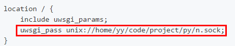
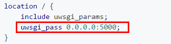

<!DOCTYPE html>
<html>
<head><meta name="generator" content="Hexo 3.8.0">
    <meta charset="utf-8">

    

    
    <title>uwsgi | o1hy</title>
    
    <meta name="viewport" content="width=device-width, initial-scale=1, maximum-scale=1">
    
        <meta name="keywords" content="">
    
    <meta name="description" content="镇楼https://uwsgi-docs-zh.readthedocs.io/zh_CN/latest/index.html 个人理解uwsgi是类似nginx或者apache这类容器与python交互的东西。  WSGI 是一个 Python 协议，定义了应用程序（我们写的软件）如何与 Web 服务器（如 Nginx）通信，WSGI 只是一个接口 WSGI是一种通信协议。uwsgi同WSGI一样">
<meta property="og:type" content="article">
<meta property="og:title" content="uwsgi">
<meta property="og:url" content="https://17307.github.io/2018/10/28/uwsgi/index.html">
<meta property="og:site_name" content="o1hy">
<meta property="og:description" content="镇楼https://uwsgi-docs-zh.readthedocs.io/zh_CN/latest/index.html 个人理解uwsgi是类似nginx或者apache这类容器与python交互的东西。  WSGI 是一个 Python 协议，定义了应用程序（我们写的软件）如何与 Web 服务器（如 Nginx）通信，WSGI 只是一个接口 WSGI是一种通信协议。uwsgi同WSGI一样">
<meta property="og:locale" content="en">
<meta property="og:image" content="http://h1.ioliu.cn/bing/ApfelTag_ZH-CN7906570680_400x240.jpg">
<meta property="og:updated_time" content="2019-02-02T11:52:17.000Z">
<meta name="twitter:card" content="summary">
<meta name="twitter:title" content="uwsgi">
<meta name="twitter:description" content="镇楼https://uwsgi-docs-zh.readthedocs.io/zh_CN/latest/index.html 个人理解uwsgi是类似nginx或者apache这类容器与python交互的东西。  WSGI 是一个 Python 协议，定义了应用程序（我们写的软件）如何与 Web 服务器（如 Nginx）通信，WSGI 只是一个接口 WSGI是一种通信协议。uwsgi同WSGI一样">
<meta name="twitter:image" content="http://h1.ioliu.cn/bing/ApfelTag_ZH-CN7906570680_400x240.jpg">
    

    

    
        <link rel="icon" href="/css/images/github.png">
    

    <link rel="stylesheet" href="/libs/font-awesome/css/font-awesome.min.css">
    <link rel="stylesheet" href="/libs/titillium-web/styles.css">
    <link rel="stylesheet" href="/libs/source-code-pro/styles.css">

    <link rel="stylesheet" href="/css/style.css">

    <script src="/libs/jquery/3.3.1/jquery.min.js"></script>
    
    
        <link rel="stylesheet" href="/libs/lightgallery/css/lightgallery.min.css">
    
    
        <link rel="stylesheet" href="/libs/justified-gallery/justifiedGallery.min.css">
    
    
    


</head>
</html>
<body>
    <div id="wrap">
        <header id="header">
    <div id="header-outer" class="outer">
        <div class="container">
            <div class="container-inner">
                <div id="header-title">
                    <h1 class="logo-wrap">
                        <a href="/" class="logo"></a>
                    </h1>
                    
                </div>
                <div id="header-inner" class="nav-container">
                    <a id="main-nav-toggle" class="nav-icon fa fa-bars"></a>
                    <div class="nav-container-inner">
                        <ul id="main-nav">
                            
                                <li class="main-nav-list-item">
                                    <a class="main-nav-list-link" href="/">Home</a>
                                </li>
                            
                                        <ul class="main-nav-list"><li class="main-nav-list-item"><a class="main-nav-list-link" href="/categories/ML-DL/">ML&DL</a></li><li class="main-nav-list-item"><a class="main-nav-list-link" href="/categories/PT/">PT</a></li><li class="main-nav-list-item"><a class="main-nav-list-link" href="/categories/ctf/">ctf</a></li><li class="main-nav-list-item"><a class="main-nav-list-link" href="/categories/others/">others</a><ul class="main-nav-list-child"><li class="main-nav-list-item"><a class="main-nav-list-link" href="/categories/others/chrome/">chrome</a></li><li class="main-nav-list-item"><a class="main-nav-list-link" href="/categories/others/git/">git</a></li><li class="main-nav-list-item"><a class="main-nav-list-link" href="/categories/others/indego/">indego</a></li><li class="main-nav-list-item"><a class="main-nav-list-link" href="/categories/others/linux/">linux</a></li></ul></li><li class="main-nav-list-item"><a class="main-nav-list-link" href="/categories/papers/">papers</a></li><li class="main-nav-list-item"><a class="main-nav-list-link" href="/categories/python/">python</a></li><li class="main-nav-list-item"><a class="main-nav-list-link" href="/categories/web/">web</a><ul class="main-nav-list-child"><li class="main-nav-list-item"><a class="main-nav-list-link" href="/categories/web/db/">db</a></li><li class="main-nav-list-item"><a class="main-nav-list-link" href="/categories/web/docker/">docker</a></li><li class="main-nav-list-item"><a class="main-nav-list-link" href="/categories/web/flask/">flask</a></li><li class="main-nav-list-item"><a class="main-nav-list-link" href="/categories/web/nginx/">nginx</a></li><li class="main-nav-list-item"><a class="main-nav-list-link" href="/categories/web/php/">php</a></li></ul></li></ul>
                                    
                                <li class="main-nav-list-item">
                                    <a class="main-nav-list-link" href="/about/index.html">About</a>
                                </li>
                            
                        </ul>
                        <nav id="sub-nav">
                            <div id="search-form-wrap">

    <form class="search-form">
        <input type="text" class="ins-search-input search-form-input" placeholder="Search">
        <button type="submit" class="search-form-submit"></button>
    </form>
    <div class="ins-search">
    <div class="ins-search-mask"></div>
    <div class="ins-search-container">
        <div class="ins-input-wrapper">
            <input type="text" class="ins-search-input" placeholder="Type something...">
            <span class="ins-close ins-selectable"><i class="fa fa-times-circle"></i></span>
        </div>
        <div class="ins-section-wrapper">
            <div class="ins-section-container"></div>
        </div>
    </div>
</div>
<script>
(function (window) {
    var INSIGHT_CONFIG = {
        TRANSLATION: {
            POSTS: 'Posts',
            PAGES: 'Pages',
            CATEGORIES: 'Categories',
            TAGS: 'Tags',
            UNTITLED: '(Untitled)',
        },
        ROOT_URL: '/',
        CONTENT_URL: '/content.json',
    };
    window.INSIGHT_CONFIG = INSIGHT_CONFIG;
})(window);
</script>
<script src="/js/insight.js"></script>

</div>
                        </nav>
                    </div>
                </div>
            </div>
        </div>
    </div>
</header>
        <div class="container">
            <div class="main-body container-inner">
                <div class="main-body-inner">
                    <section id="main">
                        <div class="main-body-header">
    <h1 class="header">
    
    <a class="page-title-link" href="/categories/web/">web</a>
    </h1>
</div>

                        <div class="main-body-content">
                            <article id="post-uwsgi" class="article article-single article-type-post" itemscope="" itemprop="blogPost">
    <div class="post-toc" id="post-toc">
    <strong class="post-toc-title">TOC</strong>
    <ol class="toc"><li class="toc-item toc-level-1"><a class="toc-link" href="#镇楼"><span class="toc-text">镇楼</span></a></li><li class="toc-item toc-level-1"><a class="toc-link" href="#个人理解"><span class="toc-text">个人理解</span></a></li><li class="toc-item toc-level-1"><a class="toc-link" href="#安装"><span class="toc-text">安装</span></a></li><li class="toc-item toc-level-1"><a class="toc-link" href="#例子"><span class="toc-text">例子</span></a><ol class="toc-child"><li class="toc-item toc-level-2"><a class="toc-link" href="#docker环境"><span class="toc-text">docker环境</span></a></li><li class="toc-item toc-level-2"><a class="toc-link" href="#例子2"><span class="toc-text">例子2</span></a></li><li class="toc-item toc-level-2"><a class="toc-link" href="#例子3"><span class="toc-text">例子3</span></a></li></ol></li></ol>
</div>

    <div class="article-inner">
        
            <header class="article-header">
                
    
        <h1 class="article-title" itemprop="name">
        uwsgi
        </h1>
    

            </header>
        
        
            <div class="article-meta">
                
    <div class="article-date">
        <a href="/2018/10/28/uwsgi/" class="article-date">
            <time datetime="2018-10-28T02:45:33.000Z" itemprop="datePublished">2018-10-28</time>
        </a>
    </div>

		

                
                <span id="busuanzi_container_site_pv">
                    本站总访问量<span id="busuanzi_value_site_pv"></span>次
                </span>
                <span id="busuanzi_container_page_pv">
                    本文总阅读量<span id="busuanzi_value_page_pv"></span>次
                  </span>
            </div>
        
        
        <div class="article-entry" itemprop="articleBody">
            <h1 id="镇楼"><a href="#镇楼" class="headerlink" title="镇楼"></a>镇楼</h1><p><a href="https://uwsgi-docs-zh.readthedocs.io/zh_CN/latest/index.html" target="_blank" rel="noopener">https://uwsgi-docs-zh.readthedocs.io/zh_CN/latest/index.html</a></p>
<h1 id="个人理解"><a href="#个人理解" class="headerlink" title="个人理解"></a>个人理解</h1><p>uwsgi是类似<strong>nginx</strong>或者<strong>apache</strong>这类容器与python交互的东西。</p>
<blockquote>
<p>WSGI 是一个 Python 协议，定义了应用程序（我们写的软件）如何与 Web 服务器（如 Nginx）通信，WSGI 只是一个接口</p>
<p>WSGI是一种通信协议。<br>uwsgi同WSGI一样是一种通信协议。<br>而uWSGI是实现了uwsgi和WSGI两种协议的Web服务器。</p>
</blockquote>
<p>从某种角度来看，uwsgi是一种<strong>没有</strong>nginx优秀的容器。(不知道说法是否准确)</p>
<p><a href="https://lufficc.com/blog/how-to-serve-flask-applications-with-uwsgi-and-nginx-on-ubuntu" target="_blank" rel="noopener">https://lufficc.com/blog/how-to-serve-flask-applications-with-uwsgi-and-nginx-on-ubuntu</a></p>
<h1 id="安装"><a href="#安装" class="headerlink" title="安装"></a>安装</h1><figure class="highlight python"><table><tr><td class="gutter"><pre><span class="line">1</span><br></pre></td><td class="code"><pre><span class="line">pip install uwsgi</span><br></pre></td></tr></table></figure>
<h1 id="例子"><a href="#例子" class="headerlink" title="例子"></a>例子</h1><p>现在将实现一个简单的小例子，顺便进行发散式的扩充，因为正在学习docker，所以在docker的环境下进行。</p>
<h2 id="docker环境"><a href="#docker环境" class="headerlink" title="docker环境"></a>docker环境</h2><p><strong>Dockerfile</strong><br><figure class="highlight plain"><table><tr><td class="gutter"><pre><span class="line">1</span><br><span class="line">2</span><br><span class="line">3</span><br><span class="line">4</span><br><span class="line">5</span><br><span class="line">6</span><br></pre></td><td class="code"><pre><span class="line">FROM python:3</span><br><span class="line">RUN pip install uwsgi \</span><br><span class="line">    &amp;&amp; pip install flask</span><br><span class="line">    </span><br><span class="line">EXPOSE 5000</span><br><span class="line">CMD /bin/bash</span><br></pre></td></tr></table></figure></p>
<p>**在 $PWD/python 下创建一个简单的 <figure class="highlight plain"><table><tr><td class="gutter"><pre><span class="line">1</span><br><span class="line">2</span><br><span class="line">3</span><br><span class="line">4</span><br><span class="line">5</span><br><span class="line">6</span><br><span class="line">7</span><br><span class="line">8</span><br></pre></td><td class="code"><pre><span class="line">```python</span><br><span class="line">from flask import Flask</span><br><span class="line"></span><br><span class="line">app = Flask(__name__)</span><br><span class="line"></span><br><span class="line">@app.route(&apos;/&apos;)</span><br><span class="line">def index():</span><br><span class="line">    return &quot;&lt;span style=&apos;color:red&apos;&gt;Hello World !&lt;/span&gt;&quot;</span><br></pre></td></tr></table></figure></p>
<p><strong>启动docker</strong><br><figure class="highlight bash"><table><tr><td class="gutter"><pre><span class="line">1</span><br></pre></td><td class="code"><pre><span class="line">docker run -p 5000:5000 -v <span class="variable">$PWD</span>/python:/data -it uwsgi</span><br></pre></td></tr></table></figure></p>
<p><strong>通过uwsgi启动flask</strong><br><figure class="highlight plain"><table><tr><td class="gutter"><pre><span class="line">1</span><br><span class="line">2</span><br><span class="line">3</span><br></pre></td><td class="code"><pre><span class="line">uwsgi --http 0.0.0.0:5000 -w app:app</span><br><span class="line"># 或者</span><br><span class="line">uwsgi --socket 0.0.0.0:5000 --protocol=http -w app:app</span><br></pre></td></tr></table></figure></p>
<ul>
<li><p><code>-w app:app</code> 等价于 <code>--wsgi-file app.py --callable app</code><br>指定 <strong>哪个文件下</strong>的<strong>哪个变量</strong>用来执行。</p>
</li>
<li><p><code>--http</code> 原本情况下，uwsgi是处理WSGI协议，所以需要指定   是<code>http</code>来处理。<br>如果是用<code>--socket</code>情况下，是建立起一个通信的socket，可以用来和<code>nginx</code>通信。此时，通过<code>protocol</code>来指定<code>http</code>协议。</p>
</li>
</ul>
<p><a href="https://uwsgi-docs-zh.readthedocs.io/zh_CN/latest/HTTP.html" target="_blank" rel="noopener">https://uwsgi-docs-zh.readthedocs.io/zh_CN/latest/HTTP.html</a></p>
<blockquote>
<p>http-socket <bind> 选项将会让uWSGI和原生HTTP通信。如果你的web服务器不支持 uwsgi protocol ，但是可以与上游HTTP代理通信，或者如果你正在用诸如Webfaction或者Heroku这样的服务来托管你的应用，那么你可以使用 http-socket 。如果你计划只通过uWSGI开放你的应用，那么用 http 选项来代替，因为路由器/代理/负载均衡器将会保护你。</bind></p>
</blockquote>
<p><strong>与nginx的通信</strong>  </p>
<p>有两种方式：</p>
<ul>
<li>用 <strong>ip+端口</strong> 方式来指定   socket，<strong>ip</strong>可能有问题，这里还不了解<br><code>--socket 0.0.0.0:5000</code></li>
<li>用 <strong>文件方式</strong> 指定socket<br><code>socket = /home/yy/code/project/py/n.sock</code>  </li>
</ul>
<p>此时需要nginx中使用不同的方法来配置对应socket。</p>
<p></p>
<p>下图中的 <strong>ip</strong>可能有问题，这里还不了解。<br></p>
<h2 id="例子2"><a href="#例子2" class="headerlink" title="例子2"></a>例子2</h2><figure class="highlight plain"><table><tr><td class="gutter"><pre><span class="line">1</span><br><span class="line">2</span><br><span class="line">3</span><br><span class="line">4</span><br><span class="line">5</span><br><span class="line">6</span><br><span class="line">7</span><br><span class="line">8</span><br><span class="line">9</span><br></pre></td><td class="code"><pre><span class="line">FROM python:3</span><br><span class="line">RUN pip install uwsgi &amp;&amp;\</span><br><span class="line">    pip install flask &amp;&amp;\</span><br><span class="line">    mkdir /data</span><br><span class="line"></span><br><span class="line">EXPOSE 5000</span><br><span class="line">COPY ./app.py /data</span><br><span class="line">WORKDIR /data</span><br><span class="line">CMD [&quot;uwsgi&quot;,&quot;--http&quot;,&quot;0.0.0.0:5000&quot;,&quot;-w&quot;,&quot;app:app&quot;]</span><br></pre></td></tr></table></figure>
<h2 id="例子3"><a href="#例子3" class="headerlink" title="例子3"></a>例子3</h2><p>这个例子用于介绍 <strong>uwsgi的配置文件</strong> 如何写<br><figure class="highlight ini"><table><tr><td class="gutter"><pre><span class="line">1</span><br><span class="line">2</span><br><span class="line">3</span><br><span class="line">4</span><br><span class="line">5</span><br><span class="line">6</span><br><span class="line">7</span><br><span class="line">8</span><br><span class="line">9</span><br></pre></td><td class="code"><pre><span class="line"><span class="section">[uwsgi]</span></span><br><span class="line"><span class="attr">http</span> = <span class="number">0.0</span>.<span class="number">0.0</span>:<span class="number">5000</span></span><br><span class="line"><span class="comment"># 指定运行的文件的位置</span></span><br><span class="line"><span class="attr">chdir</span> = /data/</span><br><span class="line"><span class="attr">wsgi-file</span> = /data/app.py</span><br><span class="line"><span class="comment"># 指定变量</span></span><br><span class="line"><span class="attr">callable</span> = app</span><br><span class="line"><span class="attr">processes</span> = <span class="number">4</span></span><br><span class="line"><span class="attr">threads</span> = <span class="number">2</span></span><br></pre></td></tr></table></figure></p>
<p>当然也可如此<br><figure class="highlight ini"><table><tr><td class="gutter"><pre><span class="line">1</span><br><span class="line">2</span><br><span class="line">3</span><br><span class="line">4</span><br><span class="line">5</span><br><span class="line">6</span><br><span class="line">7</span><br><span class="line">8</span><br></pre></td><td class="code"><pre><span class="line"><span class="section">[uwsgi]</span></span><br><span class="line"><span class="attr">socket</span> = <span class="number">0.0</span>.<span class="number">0.0</span>:<span class="number">5000</span></span><br><span class="line"><span class="attr">protocol</span> = http</span><br><span class="line"><span class="attr">chdir</span> = /data/</span><br><span class="line"><span class="attr">wsgi-file</span> = /data/app.py</span><br><span class="line"><span class="attr">callable</span> = app</span><br><span class="line"><span class="attr">processes</span> = <span class="number">4</span></span><br><span class="line"><span class="attr">threads</span> = <span class="number">2</span></span><br></pre></td></tr></table></figure></p>
<p><strong>执行命令</strong>：<br><figure class="highlight bash"><table><tr><td class="gutter"><pre><span class="line">1</span><br></pre></td><td class="code"><pre><span class="line">uwsgi uwsgi.ini</span><br></pre></td></tr></table></figure></p>
<p><strong>所以新的Dockerfile为</strong>:<br><figure class="highlight plain"><table><tr><td class="gutter"><pre><span class="line">1</span><br><span class="line">2</span><br><span class="line">3</span><br><span class="line">4</span><br><span class="line">5</span><br><span class="line">6</span><br><span class="line">7</span><br><span class="line">8</span><br><span class="line">9</span><br><span class="line">10</span><br></pre></td><td class="code"><pre><span class="line">FROM python:3</span><br><span class="line">RUN pip install uwsgi &amp;&amp;\</span><br><span class="line">    pip install flask &amp;&amp;\</span><br><span class="line">    mkdir /data</span><br><span class="line"></span><br><span class="line">EXPOSE 5000</span><br><span class="line">COPY ./app.py /data</span><br><span class="line">COPY ./uwsgi.ini /data</span><br><span class="line">WORKDIR /data</span><br><span class="line">CMD [&quot;uwsgi&quot;,&quot;uwsgi.ini&quot;]</span><br></pre></td></tr></table></figure></p>
<p><strong>然后</strong><br><figure class="highlight bash"><table><tr><td class="gutter"><pre><span class="line">1</span><br></pre></td><td class="code"><pre><span class="line">docker build -t uwsgi3 .</span><br></pre></td></tr></table></figure></p>
<p><strong>然后</strong><br><figure class="highlight plain"><table><tr><td class="gutter"><pre><span class="line">1</span><br></pre></td><td class="code"><pre><span class="line">docker run -p 5000:5000 uwsgi</span><br></pre></td></tr></table></figure></p>

        </div>
        <footer class="article-footer">
            


    <a data-url="https://17307.github.io/2018/10/28/uwsgi/" data-id="cjsk2ci7g0029o0vlvdh0wf6m" class="article-share-link"><i class="fa fa-share"></i>Share</a>
<script>
    (function ($) {
        $('body').on('click', function() {
            $('.article-share-box.on').removeClass('on');
        }).on('click', '.article-share-link', function(e) {
            e.stopPropagation();

            var $this = $(this),
                url = $this.attr('data-url'),
                encodedUrl = encodeURIComponent(url),
                id = 'article-share-box-' + $this.attr('data-id'),
                offset = $this.offset(),
                box;

            if ($('#' + id).length) {
                box = $('#' + id);

                if (box.hasClass('on')){
                    box.removeClass('on');
                    return;
                }
            } else {
                var html = [
                    '<div id="' + id + '" class="article-share-box">',
                        '<input class="article-share-input" value="' + url + '">',
                        '<div class="article-share-links">',
                            '<a href="https://twitter.com/intent/tweet?url=' + encodedUrl + '" class="article-share-twitter" target="_blank" title="Twitter"></a>',
                            '<a href="https://www.facebook.com/sharer.php?u=' + encodedUrl + '" class="article-share-facebook" target="_blank" title="Facebook"></a>',
                            '<a href="http://pinterest.com/pin/create/button/?url=' + encodedUrl + '" class="article-share-pinterest" target="_blank" title="Pinterest"></a>',
                            '<a href="https://plus.google.com/share?url=' + encodedUrl + '" class="article-share-google" target="_blank" title="Google+"></a>',
                        '</div>',
                    '</div>'
                ].join('');

              box = $(html);

              $('body').append(box);
            }

            $('.article-share-box.on').hide();

            box.css({
                top: offset.top + 25,
                left: offset.left
            }).addClass('on');

        }).on('click', '.article-share-box', function (e) {
            e.stopPropagation();
        }).on('click', '.article-share-box-input', function () {
            $(this).select();
        }).on('click', '.article-share-box-link', function (e) {
            e.preventDefault();
            e.stopPropagation();

            window.open(this.href, 'article-share-box-window-' + Date.now(), 'width=500,height=450');
        });
    })(jQuery);
</script>

        </footer>
    </div>
    <script type="application/ld+json">
    {
        "@context": "https://schema.org",
        "@type": "BlogPosting",
        "author": {
            "@type": "Person",
            "name": "o1hy"
        },
        "headline": "uwsgi",
        "image": "https://17307.github.iohttp://h1.ioliu.cn/bing/ApfelTag_ZH-CN7906570680_400x240.jpg",
        "keywords": "",
        "genre": "web",
        "datePublished": "2018-10-28",
        "dateCreated": "2018-10-28",
        "dateModified": "2019-02-02",
        "url": "https://17307.github.io/2018/10/28/uwsgi/",
        "description": "镇楼https://uwsgi-docs-zh.readthedocs.io/zh_CN/latest/index.html
个人理解uwsgi是类似nginx或者apache这类容器与python交互的东西。

WSGI 是一个 Python 协议，定义了应用程序（我们写的软件）如何与 Web 服务器（如 Nginx）通信，WSGI 只是一个接口
WSGI是一种通信协议。uwsgi同WSGI一样"
        "wordCount": 415
    }
</script>

</article>

    <section id="comments">
    
        
    <div id="disqus_thread">
        <noscript>Please enable JavaScript to view the <a href="//disqus.com/?ref_noscript">comments powered by Disqus.</a></noscript>
    </div>

    
    </section>


                        </div>
                    </section>
                    <aside id="sidebar">
    <a class="sidebar-toggle" title="Expand Sidebar"><i class="toggle icon"></i></a>
    <div class="sidebar-top">
        <p>follow:</p>
        <ul class="social-links">
            
                
                <li>
                    <a class="social-tooltip" title="github" href="https://github.com/17307" target="_blank" rel="noopener">
                        <i class="icon fa fa-github"></i>
                    </a>
                </li>
                
            
        </ul>
    </div>
    
        
<nav id="article-nav">
    
        <a href="/2018/10/28/docker/" id="article-nav-newer" class="article-nav-link-wrap">
        <strong class="article-nav-caption">newer</strong>
        <p class="article-nav-title">
        
            docker
        
        </p>
        <i class="icon fa fa-chevron-right" id="icon-chevron-right"></i>
    </a>
    
    
        <a href="/2018/10/28/nginx/" id="article-nav-older" class="article-nav-link-wrap">
        <strong class="article-nav-caption">older</strong>
        <p class="article-nav-title">nginx</p>
        <i class="icon fa fa-chevron-left" id="icon-chevron-left"></i>
        </a>
    
</nav>

    
    <div class="widgets-container">
        
            
                

            
                
    <div class="widget-wrap widget-list">
        <h3 class="widget-title">links</h3>
        <div class="widget">
            <ul>
                
                    <li>
                        <a href="https://das.scusec.org/">DAS</a>
                    </li>
                
                    <li>
                        <a href="https://www.sec-wiki.com/index.php">secwiki</a>
                    </li>
                
                    <li>
                        <a href="http://prettymask.github.io">prettymask</a>
                    </li>
                
                    <li>
                        <a href="https://herasu.github.io/">Fish</a>
                    </li>
                
            </ul>
        </div>
    </div>


            
                
    <div class="widget-wrap widget-list">
        <h3 class="widget-title">archives</h3>
        <div class="widget">
            <ul class="archive-list"><li class="archive-list-item"><a class="archive-list-link" href="/archives/2019/02/">February 2019</a><span class="archive-list-count">3</span></li><li class="archive-list-item"><a class="archive-list-link" href="/archives/2018/11/">November 2018</a><span class="archive-list-count">1</span></li><li class="archive-list-item"><a class="archive-list-link" href="/archives/2018/10/">October 2018</a><span class="archive-list-count">6</span></li><li class="archive-list-item"><a class="archive-list-link" href="/archives/2018/09/">September 2018</a><span class="archive-list-count">12</span></li><li class="archive-list-item"><a class="archive-list-link" href="/archives/2018/08/">August 2018</a><span class="archive-list-count">11</span></li><li class="archive-list-item"><a class="archive-list-link" href="/archives/2018/06/">June 2018</a><span class="archive-list-count">3</span></li><li class="archive-list-item"><a class="archive-list-link" href="/archives/2017/09/">September 2017</a><span class="archive-list-count">1</span></li></ul>
        </div>
    </div>


            
                
    <div class="widget-wrap widget-list">
        <h3 class="widget-title">tags</h3>
        <div class="widget">
            <ul class="tag-list"><li class="tag-list-item"><a class="tag-list-link" href="/tags/chrome/">chrome</a><span class="tag-list-count">2</span></li><li class="tag-list-item"><a class="tag-list-link" href="/tags/ctf/">ctf</a><span class="tag-list-count">1</span></li><li class="tag-list-item"><a class="tag-list-link" href="/tags/docker/">docker</a><span class="tag-list-count">2</span></li><li class="tag-list-item"><a class="tag-list-link" href="/tags/flask/">flask</a><span class="tag-list-count">3</span></li><li class="tag-list-item"><a class="tag-list-link" href="/tags/linux/">linux</a><span class="tag-list-count">2</span></li><li class="tag-list-item"><a class="tag-list-link" href="/tags/md5碰撞/">md5碰撞</a><span class="tag-list-count">1</span></li><li class="tag-list-item"><a class="tag-list-link" href="/tags/metadata/">metadata</a><span class="tag-list-count">1</span></li><li class="tag-list-item"><a class="tag-list-link" href="/tags/nginx/">nginx</a><span class="tag-list-count">1</span></li><li class="tag-list-item"><a class="tag-list-link" href="/tags/php反序列化/">php反序列化</a><span class="tag-list-count">1</span></li><li class="tag-list-item"><a class="tag-list-link" href="/tags/sql/">sql</a><span class="tag-list-count">1</span></li><li class="tag-list-item"><a class="tag-list-link" href="/tags/sqlmap/">sqlmap</a><span class="tag-list-count">1</span></li><li class="tag-list-item"><a class="tag-list-link" href="/tags/sql注入/">sql注入</a><span class="tag-list-count">3</span></li><li class="tag-list-item"><a class="tag-list-link" href="/tags/文件包含/">文件包含</a><span class="tag-list-count">1</span></li><li class="tag-list-item"><a class="tag-list-link" href="/tags/流量包分析/">流量包分析</a><span class="tag-list-count">1</span></li><li class="tag-list-item"><a class="tag-list-link" href="/tags/爬虫/">爬虫</a><span class="tag-list-count">1</span></li></ul>
        </div>
    </div>


            
        
    </div>
</aside>

                </div>
            </div>
        </div>
        <a id="back-to-top" onclick="goTop()"><i class="icon fa fa-angle-up"></i></a>
        <footer id="footer">
    <div class="container">
        <div class="container-inner">
            <div class="credit">
                <h1 class="logo-wrap">
                    <a href="/" class="logo"></a>
                </h1>
                <p>&copy; 2019 o1hy</p>
                <p>Powered by <a href="//hexo.io/" target="_blank">Hexo</a>. Theme by <a href="//github.com/ppoffice" target="_blank">PPOffice</a></p>
            </div>
            <div class="footer-plugins">
              
    


            </div>
        </div>
    </div>
    <script async src="//busuanzi.ibruce.info/busuanzi/2.3/busuanzi.pure.mini.js"></script>
</footer>

        
    
    <script>
    var disqus_shortname = '17307';
    
    
    var disqus_url = 'https://17307.github.io/2018/10/28/uwsgi/';
    
    (function() {
    var dsq = document.createElement('script');
    dsq.type = 'text/javascript';
    dsq.async = true;
    dsq.src = '//' + disqus_shortname + '.disqus.com/embed.js';
    (document.getElementsByTagName('head')[0] || document.getElementsByTagName('body')[0]).appendChild(dsq);
    })();
    </script>


    
        <script src="/libs/lightgallery/js/lightgallery.min.js"></script>
        <script src="/libs/lightgallery/js/lg-thumbnail.min.js"></script>
        <script src="/libs/lightgallery/js/lg-pager.min.js"></script>
        <script src="/libs/lightgallery/js/lg-autoplay.min.js"></script>
        <script src="/libs/lightgallery/js/lg-fullscreen.min.js"></script>
        <script src="/libs/lightgallery/js/lg-zoom.min.js"></script>
        <script src="/libs/lightgallery/js/lg-hash.min.js"></script>
        <script src="/libs/lightgallery/js/lg-share.min.js"></script>
        <script src="/libs/lightgallery/js/lg-video.min.js"></script>
    
    
        <script src="/libs/justified-gallery/jquery.justifiedGallery.min.js"></script>
    
    
        <script type="text/x-mathjax-config">
            MathJax.Hub.Config({ tex2jax: { inlineMath: [['$','$'], ['\\(','\\)']] } });
        </script>
        <script src="https://cdnjs.cloudflare.com/ajax/libs/mathjax/2.7.1/MathJax.js?config=TeX-MML-AM_CHTML"></script>
    


<!-- Custom Scripts -->
<script src="/js/main.js"></script>

    </div>
<script src="/live2dw/lib/L2Dwidget.min.js?0c58a1486de42ac6cc1c59c7d98ae887"></script><script>L2Dwidget.init({"model":{"jsonPath":"/live2dw/assets/wanko.model.json"},"display":{"position":"left","width":150,"height":100,"hOffset":0,"vOffset":30},"mobile":{"show":false},"log":false,"pluginJsPath":"lib/","pluginModelPath":"assets/","pluginRootPath":"live2dw/","tagMode":false});</script></body>
</html>
<script>
    function goTop() {
        $('body, html').animate({ scrollTop: 0 }, 600);
    }
</script>
